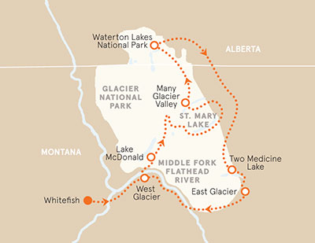
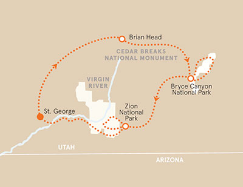

Waterton Lakes Bike Tour
Epic National Park Grandeur in Montana
It's called Big Sky. Yet, you're still amazed by how "big" it is. Listen to the sound of your wheels spinning while you enjoy miles of scenic roads and vistas beyond compare. You'll question why you don't live closer to the mountains. You'll be transformed while biking through two magnificent national parks. After it all, you'll never be the same.
This tour is rated levels 2-5. It is a 4 day trip that starts at a Skill Level of EasyGoing. On the second day you can continue on the Easy Trail or move on to the Active trail. On the third and fourth day you have an additional option of Avid.
Itinerary
Day 1: Pedal a picturesque route along the shore of Lake McDonald, formed by retreating glaciers 10,000 years ago | See new life taking root where wildfires recently altered the landscape | Take an invigorating dip in the chilly lake waters, if you dare!
Day 2: Cycle on Going-to-the-Sun Road—a 50-mile stretch with unbelievable views | Enjoy a landscape of sparkling waterfalls, expansive virgin forests, sculpted valleys and majestic peaks | An exhilarating downhill ride between glaciated mountains and emerald lakes brings you to the shore of St. Mary Lake | Ride through aspen forests to Many Glacier Valley.
Day 3: Spin north into Canada, through rolling ranchland and glacier-carved valleys | Take in views of Chief Mountain, one of the most sacred areas of the park to the Blackfeet tribe | Enjoy a thrilling ascent to Waterton Lakes National Park, a UNESCO Biosphere Reserve | Get in one more uphill to our hotel, which stands alone on a bluff above Waterton Lake, surrounded by dramatic peaks.
Days 4: Spot bighorn sheep, pikas and white-crowned sparrows | Options abound: Hiking, biking, horseback riding and boating are just a few ways to explore this incredible landscape | Ride along the eastern perimeter of Glacier against a spectacular backdrop of meadows and mountains | A side trip into the Two Medicine Valley adds spectacular views—and a few miles—to our biggest ride of the trip.
Information
Daily Guides available.
Prices start at $2,000 for the 4 days with optional activities throughout the trails for an additional fee.
Varying Skill levels.
Start and End at Whitefish.
Bryce & Zion Bike Tour
Red-Rock Wonders in Utah's National Parks
Riders love a challenge. And every great challenge brings a reward. Yours will come in the form of epic canyons, grand rock formations and lots of downhill. You'll marvel at how wind and water can produce such beautiful places. But most of all, just enjoy it. And when you return home, the challenge becomes finding routes that can live up to these.
This toouor is rated levels 2-4. It is a 6 day trip that starts at a Skill Level of EasyGoing. On the second day you can continue on the Easy Trail or move on to the Active trail. On the third and fourth day you have an additional option of Avid.
Itinerary
Days 1-2: Pedal through Snow Canyon's orange and white Navajo sandstone cliffs | Experience awe-inspiring Cedar Breaks National Monument, a lesser-known gem with stone towers, canyons, columns and arches | Descend into meadows ringed by quaking aspen and ponderosa pine | Spin across the high desert to Bryce Canyon, where visibility on a clear day exceeds 100 miles.
Day 3: Explore the otherworldly wonderland of Bryce Canyon National Park during a ride to Rainbow Point and hikes on such aptly named trails as Sunrise, Inspiration and Queen's Garden | Grab your camera and a seat on the canyon rim to watch the sun set—an unforgettable performance.
Day 4: Witness extraordinary rock formations en route to Zion as you pedal through Red Canyon, brimming with crimson-colored pinnacles, spires and hoodoos | Watch for the impressive white-sandstone Elkhart Cliffs and geometric Checkerboard Mesa.
Days 5-6: Choose your adventure! Picturesque routes abound in this hiker's paradise from easy walks past emerald pools to unforgettable climbs providing panoramas of Zion's soaring sandstone | Enjoy a quiet morning ride through car-free Zion Canyon.
Daily Guides available.
Prices start at $3,000 for the 6 days with optional activities throughout the trails for an additional fee.
Varying Skill levels.
Start and End at St. George.